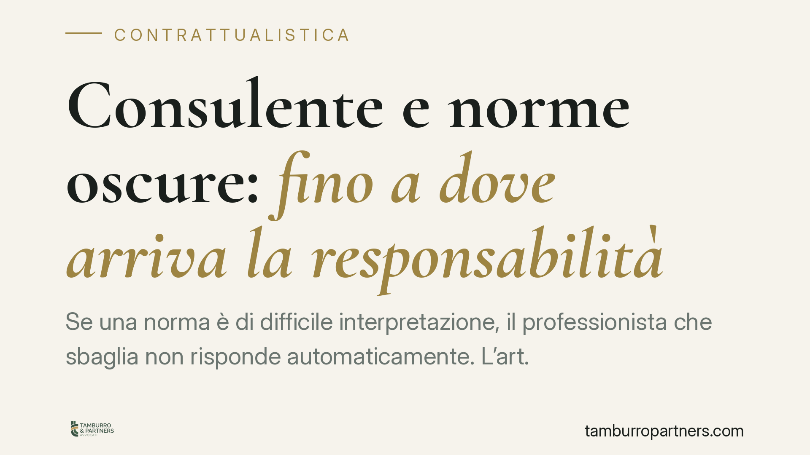

Consulente e norme oscure: fino a dove arriva la responsabilità
Se una norma è di difficile interpretazione, il professionista che sbaglia non risponde automaticamente. L'art. 2236 del codice civile limita la responsabilità ai casi di dolo o colpa grave quando la prestazione implica problemi tecnici di speciale difficoltà. Un principio che protegge consulenti del lavoro, avvocati e commercialisti, ma che ha confini precisi. Vediamo quali.

Il caso: chi paga quando la legge non è chiara
Capita spesso. Un consulente del lavoro applica una norma previdenziale, l'Inps la interpreta diversamente e il cliente si trova a pagare sanzioni. Oppure un commercialista adotta una lettura fiscale ragionevole, poi smentita da un orientamento successivo. La domanda è netta: il professionista deve risarcire il danno?
La risposta dipende dal grado di oscurità della norma e dal tipo di errore commesso. Non ogni sbaglio genera responsabilità.
Inquadramento normativo
Il riferimento è l'art. 2236 del codice civile: "Se la prestazione implica la soluzione di problemi tecnici di speciale difficoltà, il prestatore d'opera non risponde dei danni, se non in caso di dolo o di colpa grave".
La disposizione introduce un regime attenuato. Di regola il professionista risponde per colpa lieve, cioè per la semplice negligenza. Ma quando l'incarico presenta una difficoltà tecnica qualificata, la soglia si alza: risponde solo se ha agito con dolo (intenzionalmente) o colpa grave (con una trascuratezza macroscopica, un errore inescusabile).
La Corte di Cassazione ha chiarito che tra i "problemi di speciale difficoltà" rientra anche l'interpretazione di norme oscure, contraddittorie o prive di indirizzi consolidati. Se il quadro normativo è genuinamente incerto, l'errore interpretativo del professionista non è di per sé fonte di responsabilità: lo diventa solo se la scelta adottata era palesemente irragionevole o frutto di ignoranza delle regole basilari della materia.
Attenzione però: l'art. 2236 c.c. copre la difficoltà tecnica, non la negligenza organizzativa. Perdere un termine, non depositare un documento, ignorare una scadenza sono errori che restano soggetti al criterio ordinario della colpa lieve.
Implicazioni pratiche
Per il professionista il principio è una tutela, non un salvacondotto. Chi opera su una norma controversa deve poter dimostrare di aver seguito un percorso interpretativo diligente: consultazione delle fonti, verifica della giurisprudenza disponibile, scelta motivata tra le letture possibili. È la ragionevolezza della condotta a fare la differenza, non il risultato.
Per il cliente cambia l'onere di ciò che va provato. Non basta lamentare il danno: occorre dimostrare che l'errore era grave e che una norma, seppur complessa, ammetteva una soluzione corretta e riconoscibile con l'ordinaria competenza.
Questo vale in modo trasversale per avvocato, commercialista, consulente del lavoro e notaio, con una precisazione: al notaio la giurisprudenza chiede uno standard di diligenza particolarmente elevato, perché la sua funzione è proprio garantire la certezza degli atti. Per lui il margine di applicazione dell'art. 2236 c.c. è più stretto.
Un ulteriore aspetto riguarda la prova. La difficoltà tecnica non si presume: va dedotta e dimostrata dal professionista che invoca il regime attenuato. Non è sufficiente affermare che "la norma era complicata".
Cosa fare in concreto
- Documentate il percorso interpretativo. Quando affrontate una norma incerta, mettete per iscritto le fonti consultate e le ragioni della scelta. In caso di contestazione, è la prova che l'errore non è stato frutto di trascuratezza.
- Informate il cliente dell'incertezza. Se il quadro normativo ammette più letture, segnalatelo prima di agire. Il consenso informato riduce l'esposizione e rafforza la trasparenza del rapporto.
- Distinguete difficoltà tecnica e negligenza operativa. Verificate che scadenze, depositi e adempimenti formali siano gestiti con procedure di controllo: su questi l'art. 2236 c.c. non offre riparo.
- Aggiornate la copertura assicurativa. Controllate che la polizza professionale copra anche i danni da errore interpretativo su norme controverse.
- Se siete clienti, chiedete conto delle scelte. Prima di contestare un danno, valutate con un legale se l'errore fosse effettivamente evitabile con l'ordinaria diligenza o se dipendesse da un'oggettiva oscurità della norma.
Il principio dell'art. 2236 c.c. tutela chi lavora in buona fede su un terreno incerto. Ma la protezione premia solo la diligenza dimostrabile: chi non documenta il proprio operato rischia di non poterla invocare.
---
*Contributo informativo a cura di Tamburro & Partners - Avv. Giuseppe Tamburro. Non costituisce parere legale.*
Ogni contratto ha il suo equilibrio.
Se vuoi una revisione delle clausole o una redazione su misura, scrivi allo studio. Ti rispondiamo entro un giorno lavorativo.